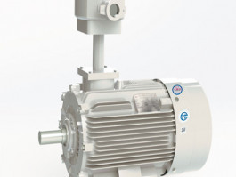
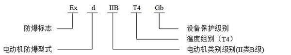
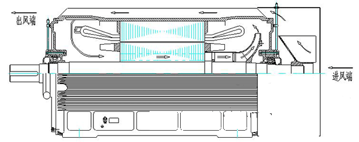

YB2/YBX2系列高压防爆电机概述
西玛YB2、YBX2系列高压防爆电机是高压隔爆型三相异步电机（机座号355～560）是结合国外先进技术和公司长期以来生产高压中型电机的成功技术，采用最新设计手段和最新材料研发运用成果而开发的高端产品。
本系列电机符合GB 755-2008《旋转电机 定额和性能》、GB 3836.1-2010《爆炸性环境 第1部分：通用要求》、GB 3836.2-2010 《爆炸性气体环境 第2 部分：由隔爆外壳“d”保护的设备 》的规定。防爆标志为ExdIIBT4 Gb适用于工厂用II类B级，温度组别为T4，设备保护级别为Gb级,可替代ExdIIAT4 Gb产品。
本系列电机具有隔爆性能优良、可靠性高、结构紧凑、高效节能、安全环保、振动小、噪声低、安装维护方便等优点。
本系列电机是新一代高压隔爆型三相异步电机，是YB560～710系列（IC511管冷结构）高压隔爆型三相异步电机的替代产品。
YB2/YBX2系列高压防爆电机用于传动各种通用机械：如压缩机、水泵、破碎机、卷扬机、离心机、切削机床、运输机械等的理想传动设备，无论户内、户外，高原性气候或湿热型气候，YB2、YBX2系列高压隔爆型三相异步电机总能提供超越卓群的传动力，得到了用户的信赖和推崇。
YB2/YBX2系列高压防爆电机基本技术参数
中 心 高：H355～560； 
额定电压：6kV、10kV；
额定频率：50Hz；
功率范围：185KW～1600kW；
极 数：2P～8P；
防护等级：IP54、IP55；
绝缘等级：155（F）级；
温升等级：B级（最大一档功率按F级考核）；
安装方式：IMB3；
冷却方式：IC411；
防爆级别：ExdⅡBT4 Gb。
型号意义 MODEL MEANING
YBX2-5601-2W
| Y | 异步电动机 |
| B | 隔爆型 |
| X | 高效率 |
| 2 | 改型设计序号 |
| 560 | 电动机轴中心高 |
| 1 | 同机座铁心长度代号 |
| 2 | 极数 |
| W | 户外（环境代号） |
通风结构示意图

← 出风端进风端 ←
YB2/YBX2系列高压防爆电机技术特点
可靠性高、使用寿命长
为了使电动机壳体满足GB 3836-2010新标准的1.5MPa水压的规定，通过先进的设计软件ANSYS对机座和端盖进行建模分析，机座采用高强度灰铸铁，端盖采用加强筋的高强度灰铸铁或钢板制造。
为延长电动机使用寿命，电动机的机座、风扇等部件采用了先进的空气动力学设计，采用创新的双回路冷却理念，保证电动机内部温度均匀分布。灰铸铁机座和端盖，以及优质的耐腐蚀防护和表面喷漆，都可以保护电动机长期免受气候影响，有效延长电动机使用寿命。
高效、节能
YB2、YBX2 系列高压隔爆型三相异步电动机以其完善的设计、制造实现了高效节能的目标，与同功率同极数的YB560～710系列高压隔爆型电动机比较，效率平均提高0.8个百分点，节能效果显著，大幅度降低电动机运行成本。
结构紧凑
所有用户都希望其传动系统能可靠运行，并且不浪费宝贵的安装空间，西安泰富西玛电动机有限公司多年以来，通过在缩小电动机安装空间上下功夫，专注于实现电动机更小的尺寸、更高的性能和可靠性，并获得了成功，YB2 、YBX2系列高压隔爆型三相异步电动机很完美的实现了这些要求。
低振动
完善的转子动力学设计、创新性的生产工艺与高精度的动平衡相结合，保证了电动机更低的振动水平。YB2、YBX2系列高压隔爆型三相异步电动机不仅满足GB10068 标准对振动的要求，在大多数场合做到了超出标准的要求。
低噪音
更低的噪音、优化的风路设计离不开正确的风扇型式的选择，由于IC411 冷却方式的电动机外风路风阻较小，机座上散热筋间的气流主要沿轴向流动，因此将风扇和风扇罩设计成最佳的流线型，不仅提高风扇效率，还大大降低风扇噪音。
内风扇由铝合金ZL101 铸造而成，可双向旋转。所有2极电动机外风扇均为轴流式风扇,只适于一种旋转方向。4极以上电动机外风扇采用盆式离心式风扇，由钢板件焊接而成，可双向旋转。
机座及端盖的高强度结构以及定、转子槽配合的优化选择也都使得电动机具有更低的噪音水平。
有效的冷却系统
YB2、YBX2系列高压隔爆型三相异步电动机有两个独立冷却风路（见图1）：内冷却风路和外冷却风路，因损耗产生的大部分热量从定子铁心传递给机座，再被外部冷却空气带走，其余部分损耗产生的热量由内冷却回路传递给机座，再被外部冷却空气带走。
外部风路的冷却气流吹过散热筋，由于机座缩腰，外部气流沿着散热筋从非传动端吹到传动端，能使气流达到较高的散热速度；接线盒安装在远离散热筋的位置上，不影响冷却空气的流动；定子绕组端部周围的机座内侧设有内散热筋；
YB2/YBX2系列高压防爆电机传动端和非传动端端盖结构相同，H450及以下端盖内、外表面带有散热筋。这些措施对充分散热起到很大作用。
内部风路的冷却是通过非传动端的内风扇使空气流过转子通风孔，在机座与端盖的内散热筋外的气流发生严重紊流，受到彻底的二次冷却，机座起到内、外空气热交换的作用，被冷却的空气朝着与外部冷却空气相同方向，通过机座内4个通风管道返回传动端，使电动机的散热比较均匀，达到内、外风路的优化设计。